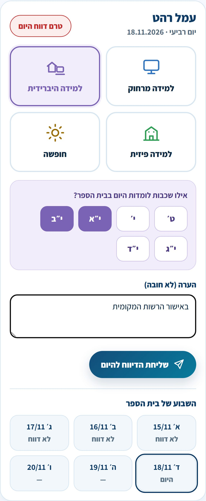
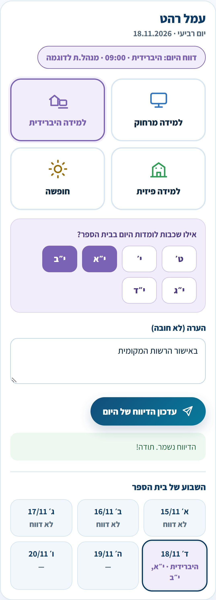
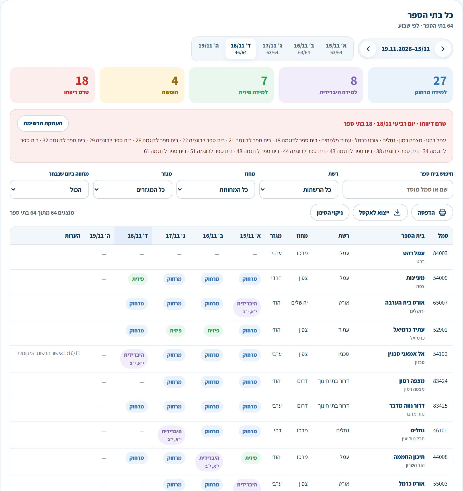

המרחב הפדגוגי ‹ למידה בחירום ‹ דיווח מתווה למידה · הסבר
דיווח מתווה למידה · איך זה עובד
כל יום, דיווח אחד לכל בית ספר: איך לומדים היום — מרחוק, היברידית, פיזית, או שיש חופשה. המנהל.ת או הרכז.ת הפדגוגי.ת ממלאים בדקה מהטלפון, וצוות המטה רואה את כל 64 בתי הספר במקום אחד.
כניסה למערכת הדיווח הקישור לשליחה: pedagogiamh.co.il/mitve-lemida.html?direct=1מי מדווח.תמנהל.ת בית הספר או הרכז.ת הפדגוגי.ת. דיווח אחד לבית הספר בכל יום — מי שמדווח.ת אחרון.ה קובע.ת, ואפשר לעדכן במהלך היום.
מי רואה את התמונה הארציתצוות המטה של המנהל להכשרה מקצועית — רואה את כל בתי הספר לפי שבוע, מסנן.ת, מדפיס.ה ומוריד.ה לאקסל.
מה ממלא.ת המנהל.ת
פעם ביום, על היום בלבד. אין דיווח בשבת.
- נכנסים דרך מנור — בכפתור "כניסה לבעלי תפקידים", עם אותה כניסה של מנור. בית הספר מזוהה לבד.
- בוחרים את מתווה הלמידה של היום — כפתור אחד מתוך ארבעה: למידה מרחוקלמידה היברידיתלמידה פיזיתחופשה
- בלמידה היברידית — מסמנים אילו שכבות לומדות היום בבית הספר (ט׳ עד י״ד, אפשר כמה).
- הערה, אם צריך — למשל "באישור הרשות המקומית". לא חובה.
- "שליחת הדיווח להיום" — מופיע אישור, והתגית בראש הדף מתעדכנת. השתנה משהו במהלך היום? בוחרים שוב ו"עדכון הדיווח של היום".
בתחתית הדף רואים את השבוע של בית הספר — מה דווח בכל יום.


מה רואה המטה
כל 64 בתי הספר בטבלה אחת, לפי שבוע — באותו מבנה של קובץ "דיווח מתווה למידה".
שבוע ויוםמעבר בין שבועות, ובחירת יום — כמה בתי ספר דיווחו בכל יום.
ספירה לפי מתווהכמה לומדים מרחוק, היברידית, פיזית, בחופשה — וכמה טרם דיווחו. לחיצה על מספר מסננת.
מי טרם דיווחרשימת בתי הספר שעוד לא דיווחו ביום שנבחר, עם כפתור העתקה — לתזכורת.
סינוןלפי רשת, מחוז, מגזר ומתווה, וחיפוש לפי שם או סמל מוסד.
הדפסההטבלה לפי הסינון, לרוחב הדף, עם השבוע והסינון בכותרת.
ייצוא לאקסלסמל מוסד, שם, רשת, מחוז, עמודה לכל יום, רשות מקומית, מגזר והערות.
